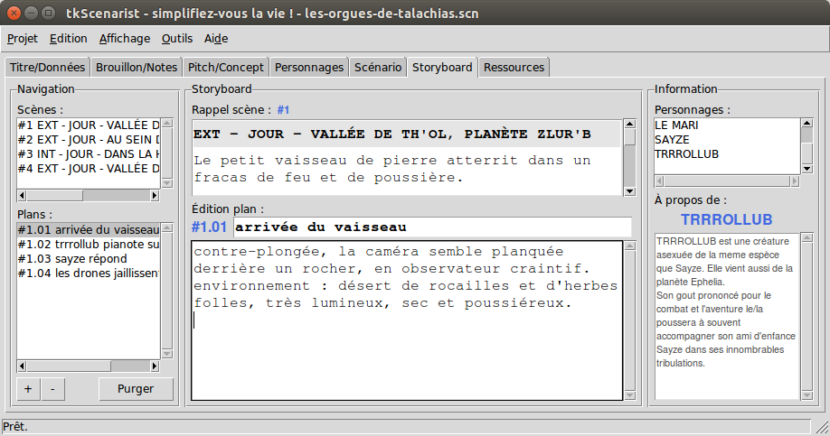

Retourner au sommaire.
Cet onglet permet de rédiger le découpage technique (storyboard) du projet de film, c'est-à-dire les différents plans caméra qui interviennent dans chaque scène du texte de scénario.
Il se compose de trois zones principales (horizontales), elles-mêmes subdivisées en deux zones (verticales) :
Toutes les zones sont redimensionnables : il suffit de placer la flèche de la souris entre les zones, l'icône du pointeur doit alors changer d'aspect (e.g. deux flèches qui s'opposent), de maintenir le clic enfoncé puis de déplacer dans le sens indiqué par le pointeur de souris pour obtenir le redimensionnement escompté.
Retourner au sommaire.
Le navigateur de scènes se remplit automatiquement au fur et à mesure que vous rédigez des scènes dans le texte de scénario (voir onglet 'Scénario').
Lorsque vous cliquez sur une scène dans la liste du navigateur de scènes, un aperçu pour rappel de scène s'affiche dans la zone centrale qui lui est dédiée.
Cet outil permet de ne jamais perdre le fil lors de la rédaction des plans caméra d'une scène donnée.
Retourner au sommaire.
La liste de plans caméra ne peut s'afficher qu'en fonction de la scène sélectionnée dans le navigateur de scènes.
Pour ajouter un plan caméra, sélectionnez tout d'abord la scène que
vous souhaitez travailler dans le navigateur de scènes, puis cliquez
sur le bouton + (signe plus) situé en bas à gauche du navigateur de
plans caméra.
Un nouveau plan vient alors s'ajouter à la liste des plans caméra et un curseur d'insertion se place automatiquement dans la zone de titre de l'éditeur de plans caméra.
Retourner au sommaire.
Pour supprimer un plan caméra, sélectionnez tout d'abord la scène que
vous souhaitez travailler dans le navigateur de scènes, sélectionnez
ensuite le plan à supprimer, puis cliquez sur le bouton - (signe
moins) situé en bas à gauche du navigateur de plans caméra.
Un plan caméra vierge (pas de texte, avec ou sans titre renseigné) sera alors tout simplement supprimé sans autre forme de procès.
En revanche, pour un plan caméra renseigné (au moins une lettre ou un signe dans la zone de texte), un dialogue s'affichera et vous demandera de confirmer votre choix avant de procéder à la suppression définitive du plan sélectionné.
Toute suppression de plan est définitive et irrévocable.
Retourner au sommaire.
Purger la liste des plans caméra revient à supprimer tous les plans considérés vierges pour une même scène donnée.
Un plan est vierge s'il ne contient pas de texte, que son titre soit renseigné ou non.
Pour purger les plans caméra d'une scène donnée, sélectionnez tout
d'abord la scène que vous souhaitez travailler dans le navigateur de
scènes, puis cliquez sur le bouton Purger situé en bas du navigateur
de plans caméra.
Un dialogue vous demandera alors confirmation avant de procéder à la suppression automatique de tous les plans vierges de la scène sélectionnée.
Toute suppression de plan est définitive et irrévocable.
Retourner au sommaire.
L'éditeur de plans caméra est composé d'une zone de numéro de plan, d'une zone de titre et d'une zone de texte.
La zone numéro de plan caméra affiche automatiquement un numéro de plan qui n'est pas modifiable par l'utilisateur.
Le numéro de plan est formaté selon les règles suivantes :
# indiquant le début de la
numérotation ;. indiquant la séparation entre numérotation de
section et numérotation de sous-section ;01, 02, etc.Exemple : le plan numéroté #3.12 correspond théoriquement au
douzième plan caméra de la scène numéro trois.
Lors d'un ajout de plan caméra, la numérotation automatique se fait toujours en prenant le plus grand numéro de plan connu pour la scène sélectionnée et en incrémentant ce numéro d'une valeur de un (1).
Des suppressions répétées de plans caméra pour une même scène sélectionnée peuvent par conséquent « trouer » la continuité de la numérotation des plans caméra.
Ce phénomène reste sans véritable conséquence, car la numérotation est entièrement reprise au moment d'exporter le storyboard vers le format PDF®, afin de cadrer au mieux avec une numérotation harmonieuse des scènes et des plans caméras qui leur sont rattachés.
Retourner au sommaire.
Le titre de plan caméra permet de résumer le plan. Il sert aussi de référence visuelle dans le navigateur de plans caméra.
Le titre de plan caméra est représenté par un champ de formulaire, c'est-à-dire une zone de texte blanche.
Cliquez dans cette zone de texte blanche pour renseigner le titre de votre plan caméra.
Les champs de formulaire sont des zones de saisie de texte à une
seule ligne : ils ne tolèrent pas de retour à la ligne (retour
chariot, touche <Entrée>).
Un double-clic sur un mot permet de sélectionner ce mot uniquement.
Un triple-clic sur un mot permet de sélectionner toute la ligne dans laquelle se trouve ce mot.
Le menu Edition > Tout sélectionner ou la combinaison de touches de
clavier <Ctrl-A> permettent de tout sélectionner dans la zone de
texte en cours d'édition.
Tout ruban de sélection est susceptible d'être remplacé par la prochaine frappe d'une touche au clavier.
Retourner au sommaire.
Le texte de plan caméra est le principal contenu de votre plan caméra.
C'est ici que vous renseignez tous les détails techniques concernant le plan en question (positions de la caméra, expositions, mouvements, effets, décors, ambiances sonores, etc).
Le texte de plan caméra est représenté par une zone de texte blanche, qui exceptionnellement ici prend en charge la détection des noms de personnages.
Cette zone de texte blanche s'appelle un éditeur de texte brut.
L'éditeur de texte brut permet des sauts à la ligne lorsque vous
pressez la touche de clavier <Entrée> (retour chariot).
Chaque saut à la ligne crée un nouveau paragraphe.
En revanche, contrairement au traitement de textes, cet objet ne permet pas la mise en forme du texte entré (diverses polices de caractères, gras, italique, souligné, couleurs d'encre et de fond, centrage / justification de paragraphes, etc).
Il s'agit d'une zone de texte neutre.
Un double-clic sur un mot permet de sélectionner ce mot uniquement.
Un triple-clic sur un mot permet de sélectionner le paragraphe dans lequel ce mot se trouve.
Le menu Edition > Tout sélectionner ou la combinaison de touches de
clavier <Ctrl-A> permettent de tout sélectionner dans l'éditeur
de texte brut.
Tout ruban de sélection est susceptible d'être remplacé par la prochaine frappe d'une touche au clavier.
Contrairement aux champs de formulaire, un éditeur de texte brut prend en charge l'annulation des mots entrés.
Pour annuler la saisie du dernier mot entré, utilisez soit le menu
Edition > Annuler, soit le raccourci clavier <Ctrl-Z> correspondant
au couplage successif des touches Ctrl (en bas à gauche ou à droite
de votre clavier) et Z du clavier alphanumérique.
Pour répéter la saisie du dernier mot annulé, utilisez soit le menu
Edition > Refaire, soit le raccourci clavier <Ctrl-Shift-Z>
correspondant au couplage successif des touches Ctrl, Shift
(chariot majuscules) et Z du clavier alphanumérique.
Retourner au sommaire.
La zone d'information personnages est composée d'une liste de noms de personnages et d'un récapitulatif de l'historique d'un personnage sélectionné.
La liste de noms de personnages se remplit automatiquement, soit lorsque vous renseignez vos personnages dans l'onglet 'Personnages', soit lorsque vous citez des personnages dans les dialogues de l'onglet 'Scénario'.
Pour afficher l'historique d'un personnage donné, cliquez simplement sur son nom dans la liste de noms de personnages.
Cet outil vous permet de consulter toutes les histoires personnelles de tous les personnages renseignés dans le projet sans avoir à quitter votre onglet de travail actuel.
Retourner au sommaire.
IMPORTANT : afin de vous préserver de toute mauvaise surprise,
pensez à sauvegarder régulièrement votre projet, soit en utilisant
le menu Projet > Enregistrer, soit en utilisant le raccourci clavier
<Ctrl-S> correspondant au couplage successif des touches Ctrl (en
bas à gauche ou à droite de votre clavier) et S du clavier
alphanumérique.
Retourner au sommaire.
Retourner à l'accueil.